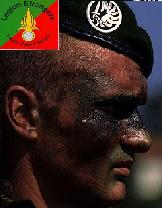

Forums galactiques > Assemblée Galactique : diplomatie officielle > Accord de Paix
Pages : 1
| Général Victa Respect diplomatique : 364  19/06 ETU 19:12  | Score : 3 Détails Un démon rouge arriva en courant
Désoler ,si ce n'est pas mon maitre(hunta) qui viens mais il est à l'hopital pour le moment. Je viens donc vous annoncer ... Que pour préserver la paix et la liberté en esperance . Un accord de paix à était signer avec corti cronos avec l'accord de mon maitre. Voici l'accord : _Elle n'attaquera pas de planétes controler par des commandants. _Elle ne cherchera pas à venger sa famille . _Elle rejoint l'organisme de liberté et de paix. En echange , _Elle sera protéger par moi . _Elle recevra donc une planéte à coté de la capital :Lumen 2(capitale démoniaque) Nous demanderions pour conclure cette accord ,qu'elle vienne ici le signer . | ||
| Corti Cronos Respect diplomatique : 13  19/06 ETU 19:26 | Score : 4 Détails J'accepte cet accord...
Pour le bien de mes VME (^_^) Je vous salu et jesper propéré en tant que commercant | ||
| Dizin Cronos Respect diplomatique : 23 20/06 ETU 07:22 | Score : 2 Détails Ma chère soeur, te rabaisse pas à signer un contrat bidons, personne ne veut notre mort, sauf Hunta, mais si il nous attaque il laissera mourir ses démons sur nos défenses...
En plus sur le marché, il t'a menacé, et c'est bien le seul, pour la simple raison qu'il a peur de notre famille, je te conseil d'annuler ce contrat... | ||
| Général Victa Respect diplomatique : 364 20/06 ETU 07:23 | Score : 1 Détails Un hollogramme apparu ,c'était celui d'Hunta
Bon ,encore un cronos qui fait des siennes et dés le matin ,alors j'aime pas sa... Je te conseille de pas me menacer nouveau cronos ,si tu connais l'histoire de ta famille. Ta soeur à su réflechir elle ,je te conseille de faire de même . PS:Peur de ta famille ,tu crois ,tu veux que j'essaye pour voir? | ||
| Dizin Cronos Respect diplomatique : 23 20/06 ETU 07:26 | Score : 4 Détails Je ne vous est pas menacé !
C'est vous qui avez menacé ma soeur dans le marché dans sa vente, et même si je signais, vous ne pourrez rien pour nous protéger. Edit: Vas y, essaye, mais tu perdras des démons inutilement. | ||
| Général Victa Respect diplomatique : 364 20/06 ETU 07:27 | Score : 1 Détails Je ne l'ai pas menacé ,je lui ai proposé de signer un accord de paix,vu ce qu'a fait votre famille...
Cet accord permet qu'elle ne se fasse pas attaqué,mais qu'elle n'attaque pas non plus . Ps:Tu me provoque ou quoi? | ||
| Dizin Cronos Respect diplomatique : 23 20/06 ETU 07:30 | Score : 4 Détails "NOnnn,je croyais qu'on avait eu tous les cronos.
Bon bah va falloir finir le travail..." Vous aviez dit ça au marché à ma soeur, si c'est pas des menaces... Et non, je vous provoque pas, c'est vous qui accusez ma famille de tout et de rien, je suis sûr que si je prenais les toilettes de l'assemblée vous direz, "Il a salit nos toilettes, cassez lui la gueule". | ||
| Général Victa Respect diplomatique : 364 20/06 ETU 07:33 | Score : 2 Détails Ceux-ci avait était dit avant l'accord de paix.Donc votre soeur je n'y toucherais pas .
Mais Si vous continuez à m'enerver de la sorte. Effectivement je vais salir les toilettes avec votre visage(pas celui de votre soeur). Alors arreter de faire votre malin comme les autres de famille ,car vous avez connus leur sort,vous voulez finir de même? Bon si vous voulez me parlez les com-ling sa exite ,je dois maintenant me retirer. | ||
| black angel Respect diplomatique : 87  20/06 ETU 09:45 | Score : 2 Détails ou on se calme les amis!!!
La parole est un bon moyen pour faire valoir vos idées mais n'entrez pas en guerre et si général victa, vous toucheriez à Dizin Cronos,c'est que vous n'auriez pas tenu vos engagements.On a dit que nous laissions les cronos tranquille mais ils n'ont pas interet à nous attaquer.Le commandant Dizin Cronos parle,il ne vous attaque pas et vous vous le menacé juste parce qu'il ne veux pas que vous sallisiez sa famille. Je vous met à mon tour en garde et n'attaquez pas Dizin Cronos! sinon vous risqueriez de le regretter! | ||
| Ragnard Respect diplomatique : 1318  20/06 ETU 16:15 | Score : 3 Détails Bon, c'est quoi exactement cette salle? A quoi sert-elle?
Il me semble qu'à l'origine un Accord de Paix y a été signé, accord accepté par les deux parties, Hunta et Corti Cronos. Vous voulez la transformer en salle de déclaration de guerre? Je préviens donc une fois, et ce sera la seule! Le prochain qui profère des menaces ici pourrait se retrouver face aux troupes du Clan des Loups Hurlants, jeune commandant ou pas! |
Pages : 1
Forums galactiques > Assemblée Galactique : diplomatie officielle > Accord de Paix